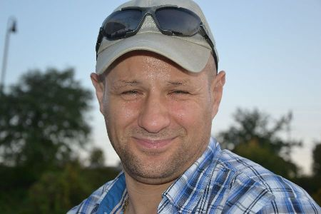

FIA FOX — Fair Internet InitiativeFIA FOX — Fair Internet InitiativeFIA FOX — Fair Internet InitiativeFIA FOX — Fair Internet InitiativeFIA FOX — Fair Internet InitiativeFIA FOX — Fair Internet InitiativeFIA FOX — Fair Internet InitiativeFIA FOX — Fair Internet InitiativeFIA FOX — Fair Internet Initiative


FIA FOX
Bürgerinitiative für ein faires Internet ohne rechtswidrige Kartell- und Monopolstrukturen und für fairen Wettbewerb in der Europäischen Union — ohne Eingriff in die Vermögensrechte der Bürgerinnen und Bürger.A citizens' initiative for a fair internet without unlawful cartel and monopoly structures and for fair competition in the European Union — without interference with the property rights of its citizens.Občianska iniciatíva za férový internet bez nezákonných kartelových a monopolných štruktúr a za spravodlivú hospodársku súťaž v Európskej únii — bez zásahov do majetkových práv občanov.Građanska inicijativa za pošten internet bez nezakonitih kartelnih i monopolnih struktura i za pošteno tržišno natjecanje u Europskoj uniji — bez zadiranja u imovinska prava građana.Inicjatywa obywatelska na rzecz uczciwego internetu bez bezprawnych struktur kartelowych i monopolowych oraz uczciwej konkurencji w Unii Europejskiej — bez ingerencji w prawa majątkowe obywateli.Iniciativa ciudadana por un internet justo sin estructuras ilícitas de cártel y monopolio y por una competencia leal en la Unión Europea — sin injerencia en los derechos patrimoniales de los ciudadanos.Iniziativa dei cittadini per un internet equo senza strutture illecite di cartello e monopolio e per una concorrenza leale nell'Unione europea — senza interferenze nei diritti patrimoniali dei cittadini.Initiative citoyenne pour un internet équitable sans structures illicites d'entente et de monopole et pour une concurrence loyale dans l'Union européenne — sans atteinte aux droits patrimoniaux des citoyens.Medborgarinitiativ för ett rättvist internet utan olagliga kartell- och monopolstrukturer och för sund konkurrens i Europeiska unionen — utan ingrepp i medborgarnas egendomsrätt.
💝 Unterstützen Sie unsere Mission💝 Support our mission💝 Podporte našu misiu💝 Podržite našu misiju💝 Wesprzyj naszą misję💝 Apoye nuestra misión💝 Sostieni la nostra missione💝 Soutenez notre mission💝 Stöd vårt uppdrag
FIA FOX arbeitet unabhängig und ohne externe Finanzierung durch Unternehmen oder Institutionen.FIA FOX works independently and without external funding from companies or institutions.FIA FOX pracuje nezávisle a bez externého financovania od firiem či inštitúcií.FIA FOX djeluje neovisno i bez vanjskog financiranja od tvrtki ili institucija.FIA FOX działa niezależnie i bez zewnętrznego finansowania od firm czy instytucji.FIA FOX trabaja de forma independiente y sin financiación externa de empresas o instituciones.FIA FOX opera in modo indipendente e senza finanziamenti esterni da imprese o istituzioni.FIA FOX agit de manière indépendante et sans financement externe d'entreprises ou d'institutions.FIA FOX arbetar oberoende och utan extern finansiering från företag eller institutioner.
Ihre Beiträge dienen der Überführung der Initiative in einen eingetragenen Verein im Sinne des Gesetzes sowie der Deckung der laufenden Kosten und der Koordination der Initiative.Your contributions serve to convert the initiative into a registered association within the meaning of the law and to cover its running costs and coordination.Vaše príspevky slúžia na prevedenie iniciatívy na registrované združenie v zmysle zákona a na pokrytie bežných nákladov a koordinácie iniciatívy.Vaši prilozi služe pretvaranju inicijative u registrirano udruženje u smislu zakona te pokrivanju tekućih troškova i koordinacije.Państwa wpłaty służą przekształceniu inicjatywy w zarejestrowane stowarzyszenie w rozumieniu prawa oraz pokryciu bieżących kosztów i koordynacji.Sus contribuciones sirven para convertir la iniciativa en una asociación registrada conforme a la ley y para cubrir los gastos corrientes y la coordinación.I vostri contributi servono a trasformare l'iniziativa in un'associazione registrata ai sensi di legge e a coprire i costi correnti e il coordinamento.Vos contributions servent à transformer l'initiative en association déclarée au sens de la loi et à couvrir les frais courants et la coordination.Era bidrag används för att ombilda initiativet till en registrerad förening enligt lag och för att täcka löpande kostnader och samordning.
💝 Jetzt spenden →💝 Donate now →💝 Prispieť teraz →💝 Doniraj sada →💝 Wesprzyj teraz →💝 Donar ahora →💝 Dona ora →💝 Faire un don →💝 Ge en gåva →Unsere MissionOur missionNaša misiaNaša misijaNasza misjaNuestra misiónLa nostra missioneNotre missionVårt uppdrag
Bürgerinitiative für faires Internet und fairen Wettbewerb in der Europäischen Union.A citizens' initiative for a fair internet and fair competition in the European Union.Občianska iniciatíva za férový internet a spravodlivú hospodársku súťaž v Európskej únii.Građanska inicijativa za pošten internet i pošteno tržišno natjecanje u Europskoj uniji.Inicjatywa obywatelska na rzecz uczciwego internetu i uczciwej konkurencji w Unii Europejskiej.Iniciativa ciudadana por un internet justo y una competencia leal en la Unión Europea.Iniziativa dei cittadini per un internet equo e una concorrenza leale nell'Unione europea.Initiative citoyenne pour un internet équitable et une concurrence loyale dans l'Union européenne.Medborgarinitiativ för ett rättvist internet och sund konkurrens i Europeiska unionen.
Wir wenden uns gegen wettbewerbswidrige Kartell- und Monopolpraktiken marktbeherrschender Konzerne, die nach Auffassung der Initiative zu deren ungerechtfertigter Bereicherung, zu überhöhten Preisen, zur Einschränkung des fairen Wettbewerbs und zu Eingriffen in die Vermögensrechte der Bürgerinnen und Bürger der Europäischen Union führen.We oppose the anti-competitive cartel and monopoly practices of dominant corporations which, in the initiative's view, lead to their unjustified enrichment, to excessive prices, to the restriction of fair competition and to interference with the property rights of the citizens of the European Union.Staviame sa proti protisúťažným kartelovým a monopolným praktikám dominantných koncernov, ktoré podľa iniciatívy vedú k ich neoprávnenému obohateniu, k neprimeraným cenám, k obmedzeniu spravodlivej súťaže a k zásahom do majetkových práv občanov Európskej únie.Suprotstavljamo se protutržišnim kartelnim i monopolnim praksama vladajućih korporacija koje, prema inicijativi, vode njihovu neopravdanom bogaćenju, previsokim cijenama, ograničenju poštenog tržišnog natjecanja i zadiranju u imovinska prava građana Europske unije.Sprzeciwiamy się antykonkurencyjnym praktykom kartelowym i monopolowym dominujących koncernów, które zdaniem inicjatywy prowadzą do ich nieuzasadnionego wzbogacenia, do zawyżonych cen, do ograniczenia uczciwej konkurencji i do ingerencji w prawa majątkowe obywateli Unii Europejskiej.Nos oponemos a las prácticas anticompetitivas de cártel y monopolio de las grandes empresas dominantes que, a juicio de la iniciativa, conducen a su enriquecimiento injustificado, a precios excesivos, a la restricción de la competencia leal y a injerencias en los derechos patrimoniales de los ciudadanos de la Unión Europea.Ci opponiamo alle pratiche anticoncorrenziali di cartello e monopolio dei gruppi dominanti che, secondo l'iniziativa, portano al loro ingiustificato arricchimento, a prezzi eccessivi, alla restrizione della concorrenza leale e a interferenze nei diritti patrimoniali dei cittadini dell'Unione europea.Nous nous opposons aux pratiques anticoncurrentielles d'entente et de monopole des groupes dominants qui, selon l'initiative, conduisent à leur enrichissement injustifié, à des prix excessifs, à la restriction d'une concurrence loyale et à des atteintes aux droits patrimoniaux des citoyens de l'Union européenne.Vi motsätter oss konkurrensbegränsande kartell- och monopolmetoder hos dominerande koncerner som enligt initiativet leder till deras oberättigade berikning, till överpriser, till inskränkt sund konkurrens och till ingrepp i EU-medborgarnas egendomsrätt.
FIA FOX ist die zivilgesellschaftliche Antwort: Dokumentation, Rechtsaktivismus und öffentliche Kontrolle.FIA FOX is the civil-society answer: documentation, legal activism and public scrutiny.FIA FOX je odpoveď občianskej spoločnosti: dokumentácia, právny aktivizmus a verejná kontrola.FIA FOX je odgovor civilnog društva: dokumentacija, pravni aktivizam i javni nadzor.FIA FOX to odpowiedź społeczeństwa obywatelskiego: dokumentacja, aktywizm prawny i kontrola publiczna.FIA FOX es la respuesta de la sociedad civil: documentación, activismo jurídico y control público.FIA FOX è la risposta della società civile: documentazione, attivismo giuridico e controllo pubblico.FIA FOX est la réponse de la société civile : documentation, activisme juridique et contrôle public.FIA FOX är civilsamhällets svar: dokumentation, rättsaktivism och offentlig granskning.
Diese Seite teilenShare this pageZdieľať túto stránkuPodijeli ovu stranicuUdostępnij tę stronęCompartir esta páginaCondividi questa paginaPartager cette pageDela denna sida
KontaktContactKontaktKontaktKontaktContactoContattoContactKontakt
Peter Ferenc
Initiator & KoordinatorInitiator & coordinatorIniciátor a koordinátorInicijator i koordinatorInicjator i koordynatorIniciador y coordinadorIniziatore e coordinatoreInitiateur et coordinateurInitiativtagare och samordnare

| 📍 AnschriftAddressAdresaAdresaAdresDirecciónIndirizzoAdresseAdress: Rammelkam 2 84036 Kumhausen Deutschland |
📧 E-Mail: info@foxprof.club 🌐 Web: foxprof.club 📞 TelefonPhoneTelefónTelefonTelefonTeléfonoTelefonoTéléphoneTelefon: +49 157 317 33332 📠 Fax: +1 231 538 6409 |
Folgen Sie unsFollow usSledujte násPratite nasObserwuj nasSíganosSeguiciSuivez-nousFölj oss
Impressum · DatenschutzerklärungPrivacy policyOchrana osobných údajovZaštita podatakaOchrona danychProtección de datosInformativa privacyPolitique de confidentialitéIntegritetspolicy
Inhalte gemäß journalistischem Privileg, Art. 85 DSGVO i. V. m. § 23 BDSG.Content under the journalistic privilege, Art. 85 GDPR in conjunction with § 23 BDSG.Obsah na základe novinárskej výsady, čl. 85 GDPR v spojení s § 23 BDSG.Sadržaj na temelju novinarske povlastice, čl. 85. GDPR-a u vezi s § 23. BDSG-a.Treści na podstawie przywileju dziennikarskiego, art. 85 RODO w zw. z § 23 BDSG.Contenidos al amparo del privilegio periodístico, art. 85 RGPD en relación con el § 23 BDSG.Contenuti in forza del privilegio giornalistico, art. 85 GDPR in combinato disposto con il § 23 BDSG.Contenus au titre du privilège journalistique, art. 85 RGPD combiné au § 23 BDSG.Innehåll enligt det journalistiska privilegiet, art. 85 GDPR jämförd med § 23 BDSG.